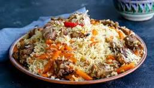
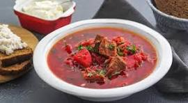
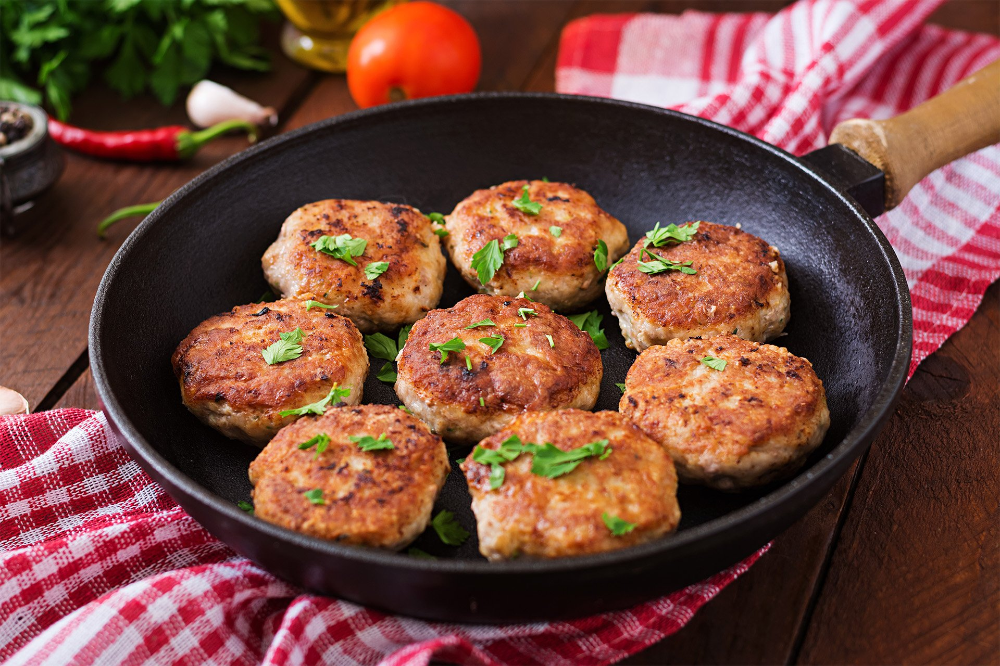
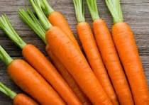
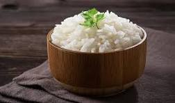
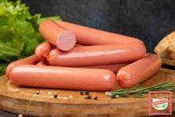
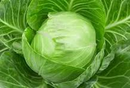
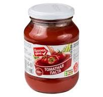

Плов с морковью
Классика студенческой кухни: рис, морковь, лук и растительное масло
Кулинар и фуд-блогер
Личная страница кулинара и фуд-блогера, подражателя Артемию Абрамову
Увлекаюсь приготовлением пищи из того, что было в холодильнике, а также создаю новые рецепты из самых дешёвых продуктов

Классика студенческой кухни: рис, морковь, лук и растительное масло

Когда свёкла — это роскошь: наваристый суп из лука, капусты и томатной пасты

Сытно и сердито: котлеты с добавлением риса, чтобы хватило на весь день

Бюджетный источник бета-каротина и сладкая база для зажарки

Ароматная основа для супов, подлив и вторых блюд

Сытный гарнир и основа для плова, котлет и быстрых блюд

Быстрый белковый ингредиент для студенческого меню

Недорогой источник клетчатки и объема для супов

Насыщенный вкус, цвет и основа для бюджетного борща